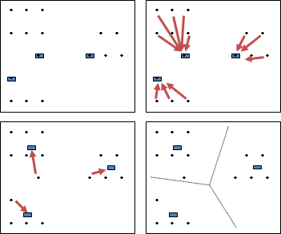
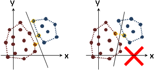

Clustering
程度★ 難度★★
同聲相應，同氣相求；水流濕，火就燥，雲從龍，風從虎。《易傳》
Cluster
按照資料之間的差異性，將資料分組。一筆資料只屬於某一組，相似資料歸類於同一組。每一組稱作一個「群集」。
群聚與隔離是一體兩面的。相似資料漸漸群聚，相異資料亦漸漸隔離。最後出現了群聚中心，同時也出現了分界線。
群集演算法的基本原理，一類是不斷切割群集，表示成樹狀圖；另一類是近朱者赤、近墨者黑，不斷將資料重新分組。
群集演算法是一種迴歸，迴歸標的是點集合而非函數。既是迴歸，當然也可以套用最佳化演算法，例如粒子演算法，只是效率太差罷了。
k-Means Clustering（Lloyd-Max Algorithm）
一、設定群集數量為k，隨機散佈k個點作為群集中心（常用既有的點）。
二、每一點分類到距離最近的群集中心（常用直線距離）。
三、重新計算每一個群集中心（常用平均值）。
重複二與三，直到群集不變、群集中心不動為止。最後形成Voronoi Diagram。
時間複雜度為O(NKT)，N是資料量，K是群集數量，T是重複次數。
缺點是群集之間不能重疊、群集分界是不能是曲線、極端值容易使群集中心偏移、群集數量與群集中心容易設得太差、資料分布呈甜甜圈時群集中心可能無法收斂。
小遊戲：http://etrex.blogspot.com/2008/05/k-mean-clustering.html
Linde-Buzo-Gray Clustering
首先隨機設定一個群集中心（常用平均值）。不斷讓群集中心往反方向分裂成兩倍數量（常用少量移動、群集內最遠點對），並且重新實施k-Means Clustering。
優點是不用煩惱群集中心的初始位置。
k-Nearest Neighbor Clustering
每一點各自找到距離最近的k個點作為鄰居，採多數決歸類到群集。如果距離超過了threshold，找不足k個鄰居，就替該點創造一個新的群集。
Jarvis-Patrick Clustering
每一點各自找到距離最近的k個點作為鄰居。當a和b彼此都是鄰居，或者a和b的鄰居至少有k'個都相同（k'是threshold，k'<=k），則a和b就歸類到同一個群集。
優點是能找到不規則形狀的群集。
Minimum Spanning Tree
詳見「Spanning Tree: Kruskal's Algorithm」。
Minimum Cut Tree
詳見「Minimum s-t Cut」。
Support Vector Machine
程度★★ 難度★★
師曠之聰，不以六律，不能正五音。《孟子》
Support Vector Machine
http://www.cmlab.csie.ntu.edu.tw/~cyy/learning/tutorials/
Clustering是不知道群集（分類），嘗試找群集、找分界線；SVM是已經知道群集（分類），直接找分界線。
讓分界線到各類資料的最短距離相等、最短距離越大越好。
各類資料各自求凸包。分界線是凸包之間最近點對的中垂線，或者分界線平行於凸包上某一條邊。
一般使用最佳化演算法Linear Programming求得分界線。
熟悉線性代數的讀者，也可以套用特別的基底呈現資料（作SVM的人習慣叫做kernel trick），讓分界線成為曲線。
如果不同類別的資料都黏在一起（例如太極圖案），那麼SVM完全無效。
Support Vector Regresssion
分界線改為迴歸線。其實就是高維度的線性迴歸。
Neural Network（Construction!）
程度★★ 難度★★
Neural Network
http://function1122.blogspot.com/2010/10/perceptron-learning-algorithm.html http://sydney.edu.au/engineering/it/~irena/ai01/nn/4.html http://en.wikipedia.org/wiki/Perceptron
Fuzzy Logic
???
程度★★ 難度★★
http://www.autonlab.org/tutorials/ http://blog.csdn.net/v_july_v/article/details/7577684